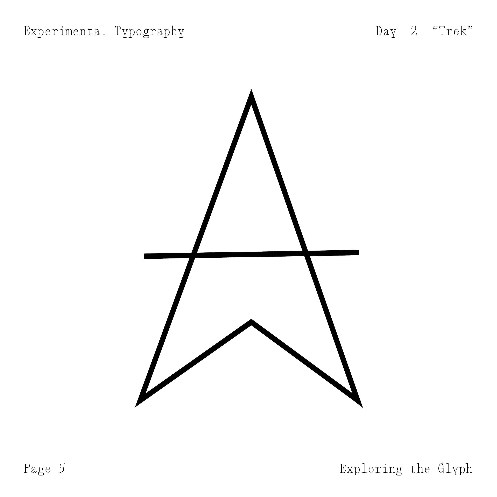
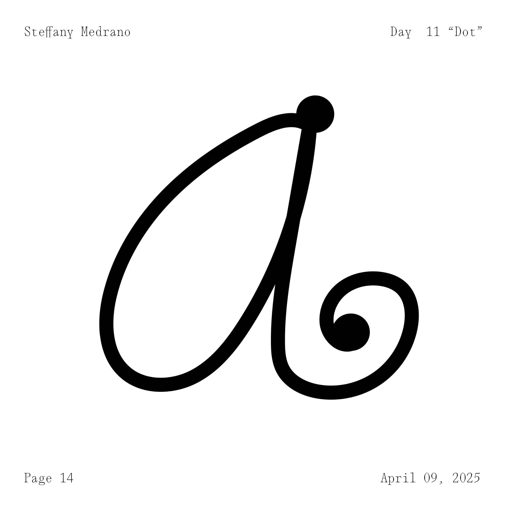
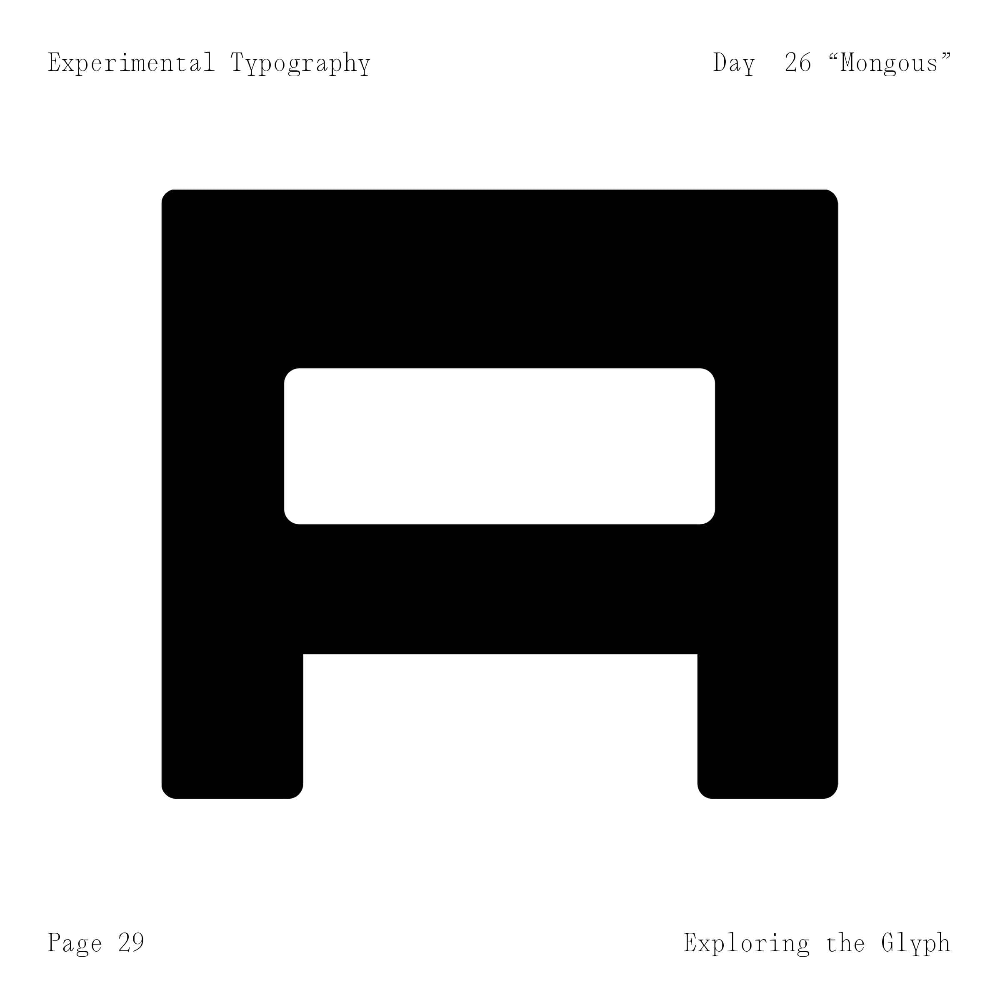
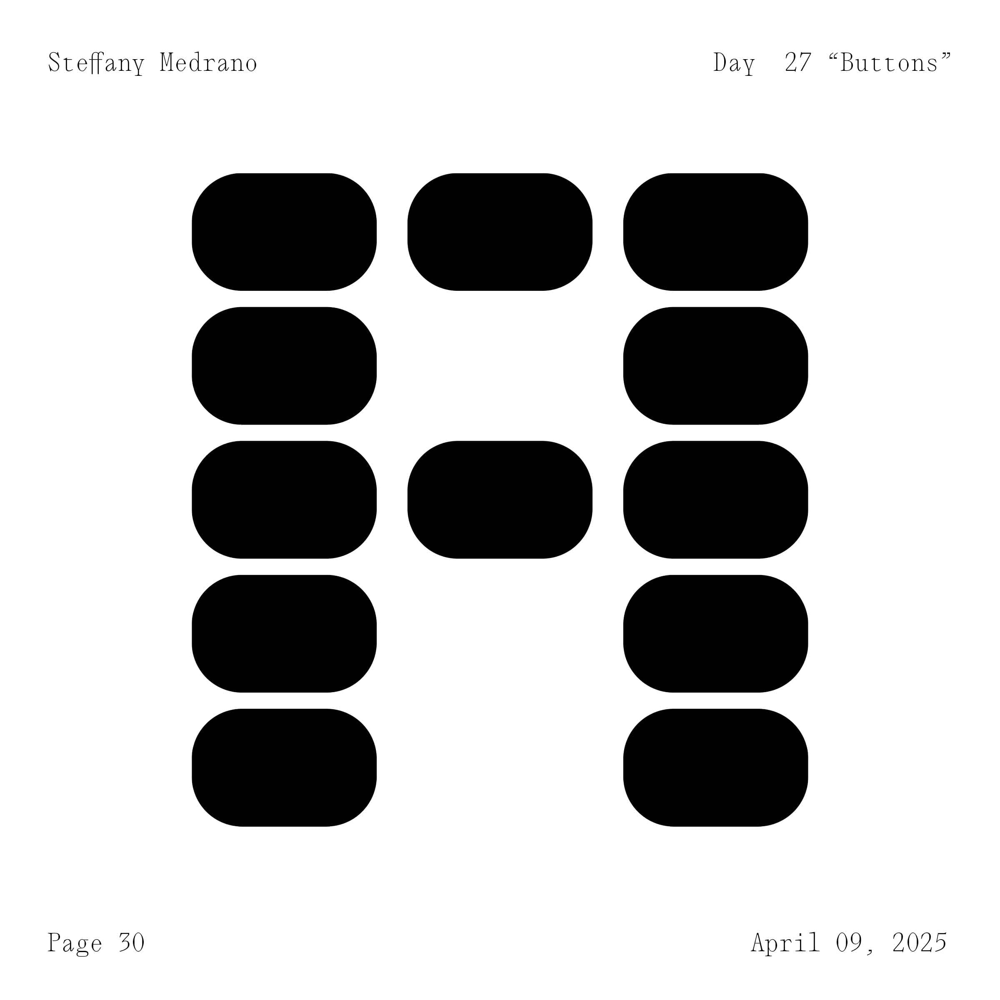
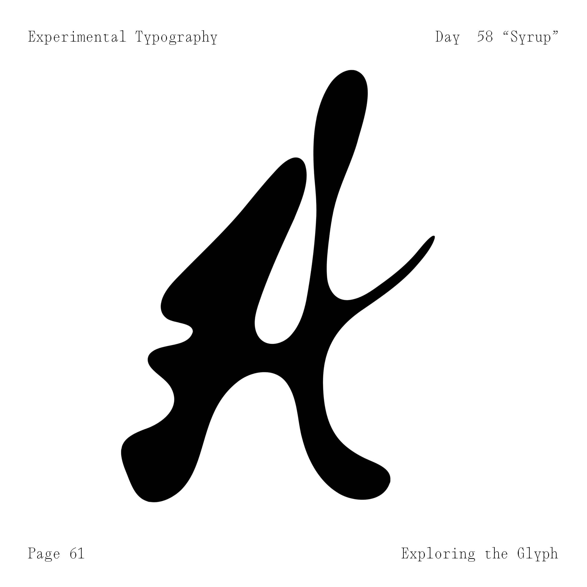
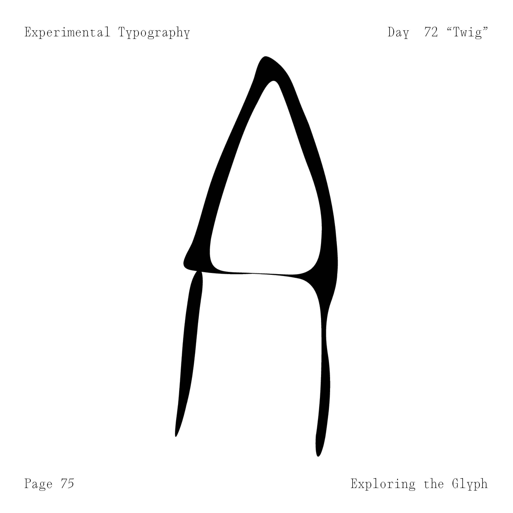
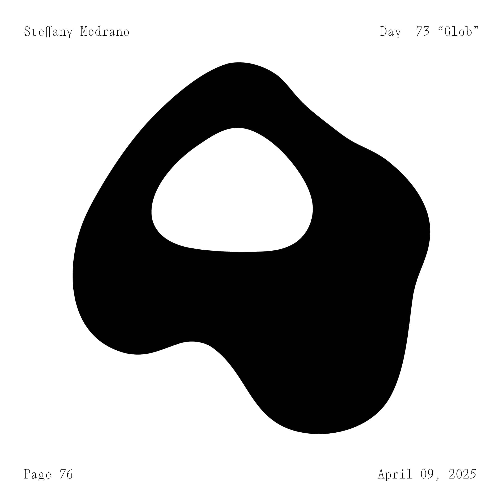

Within an experimental typography class our assignment was to create a unique iteration of a one typographic alpha–numeric character a day. I chose the letter A. This assignment showcases conceptual thinking, attention to detail, discipline, and the capacity to develop a cohesive body of work from a simple starting point.
I began creating my As on my iPad using Procreate as well as physically drawing on my sketchbook with various different mediums. I started with simple swirls and lines, playing with the available shape/image manipulations effects of the app. I used paint, decals, and items like shells, roses or hair to create different textures and silhouettes that would be interesting. Through the process around March the many ideas that would pour out which allowed me to make multiple in one day suddenly halted. So, I began to look for ideas in the most unconventional manners like asking baristas to make an A on my drink. Then, I started seeing the letter A everywhere. I went through various processes to finalize each letter form, from paper, Photoshop, Procreate, to finally Illustrator. I was mostly concentrated in smoothing out what I had drawn, but then I started to see how far I could take the softwares tools to smooth, bloat, pull, and sharpen the forms I thought were too simple/not experimental. This is the first assignment of this style I ever had, and to develop an exploration of creativity in something as simple as an A, I found that this skill becomes more effortless with time. As someone that used to work in sporadic bursts, this project allowed me to constantly build my knowledge of creative production within an entire semester.